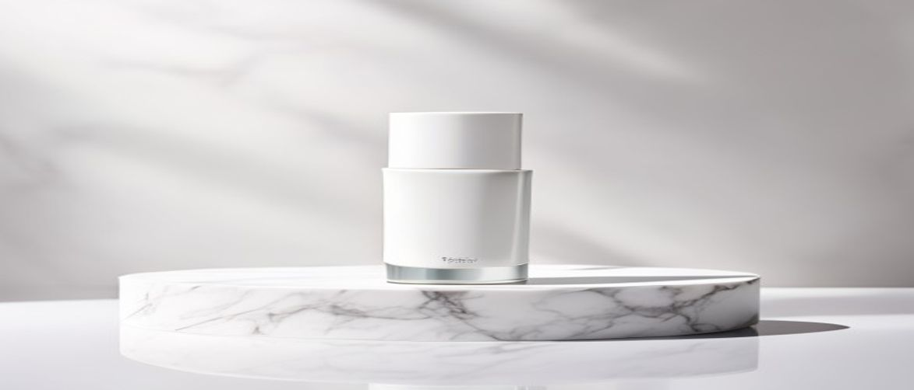

Are you searching for a moisturizer that goes beyond basic hydration, actively working to restore and protect your skin? Understanding whether is clinical reparative moisture emulsion is the right choice for your complex skincare needs can be pivotal for achieving optimal skin health.
This comprehensive guide from Clinical Guide Hub dives deep into one of iS Clinical's most acclaimed formulations, exploring its science-backed ingredients, targeted benefits, and how it fits into a professional skincare routine. We aim to provide you with the expert insights you need to make an informed decision about this medical-grade skincare staple.
The iS Clinical Reparative Moisture Emulsion is a sophisticated, dermatologist-tested formula designed to not only hydrate but also to actively repair and protect your delicate skin barrier. This clinical formula offers a multi-faceted approach to skin health, making it a cornerstone for many professional skincare routines.
It's engineered to be non-comedogenic, ensuring it won't clog pores, which is crucial for maintaining clear and healthy skin texture. Furthermore, its lightweight yet potent composition delivers lasting moisture without feeling heavy or greasy, suitable for various skin types, including those with hypersensitive skin.
This reparative moisture emulsion is particularly beneficial for individuals seeking to improve their skin's resilience, hydration, and overall health. It is an excellent choice for those with dry, dehydrated, aging, or environmentally compromised skin.
Moreover, its gentle, non-comedogenic nature makes it suitable for post-procedure skin, sensitive skin, or even those prone to breakouts who still require significant moisture without exacerbating their condition.
The efficacy of the iS Clinical Reparative Moisture Emulsion lies in its meticulously selected, medical-grade skincare ingredients. Each component plays a vital role in delivering the product's advanced reparative and hydrating benefits, targeting concerns from the cellular level to the surface skin texture.
Understanding these ingredients helps to appreciate the clinical formula's ability to support a healthy skin barrier and promote overall skin vitality. This blend is a testament to iS Clinical's commitment to science-backed solutions.
| Ingredient / Feature | Skin Benefit / Scent Role |
|---|---|
| Hyaluronic Acid (Botanically Derived) | Deeply hydrates by attracting and holding up to 1000 times its weight in water, plumping the skin and reducing the appearance of fine lines. |
| Extremozymes® | Proprietary blend of enzymes clinically proven to protect DNA and proteins from environmental damage, enhancing cell longevity and repair. |
| Copper Tripeptide Growth Factor | Stimulates collagen and elastin production, promoting wound healing, reducing inflammation, and improving skin elasticity and firmness. |
| Glycerin | A powerful humectant that draws moisture from the air into the skin, providing long-lasting hydration and supporting the skin barrier. |
Extremozymes® are a proprietary blend of enzymes sourced from extremophilic organisms that thrive in harsh environments. These unique enzymes are naturally adapted to survive and protect themselves from extreme conditions such as intense UV radiation, extreme temperatures, and severe dryness.
When applied topically, they transfer these protective properties to human skin cells, shielding cellular DNA and proteins from environmental damage. This action is crucial for preventing premature aging and maintaining cellular integrity.
The inclusion of Extremozymes® in a clinical formula like this emulsion provides a cutting-edge defense against daily environmental stressors, which conventional antioxidants alone cannot fully address.
Copper Tripeptide Growth Factor is a naturally occurring peptide complex known for its profound regenerative properties. It plays a significant role in stimulating the synthesis of collagen and elastin, two essential proteins for maintaining the skin's structural integrity and elasticity.
Beyond its anti-aging benefits, it also possesses potent anti-inflammatory and antioxidant capabilities, aiding in wound healing and reducing irritation. It helps to improve skin texture and firmness, contributing to a more youthful and even complexion.
Integrating the iS Clinical Reparative Moisture Emulsion into your daily skincare regimen is straightforward, yet proper application enhances its effectiveness. For optimal results and to truly capitalize on its medical-grade skincare benefits, follow these expert guidelines.
This ensures the active ingredients penetrate effectively, supporting your skin barrier and improving overall skin texture. Consistency is key when aiming for a professional skincare routine that delivers visible improvements.
To maximize the benefits of your iS Clinical Reparative Moisture Emulsion, avoid over-applying the product, as this can lead to a heavy feeling without increasing efficacy. Additionally, ensure your hands are clean before application to prevent transferring bacteria to your face.
Do not apply the emulsion to un-cleansed skin, as this can hinder absorption and trap impurities, potentially leading to breakouts or diminished results. Always layer products from thinnest to thickest consistency.
Always perform a patch test on a small area of skin before full facial application, especially if you have hypersensitive skin or are introducing a new medical-grade skincare product.
Have questions or a comment on the post? Send us a message and we will get back to you soon.